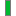
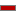

Tags
denote positions and widths in time (and derivations) of events related to the EEG, such as:
Stimuli for averaging evoked potentials
EEG structures like sleep spindles or artifacts
Sleep stages
Tag types:
page tag
 block tag
 channel tag
 page tag
page tag